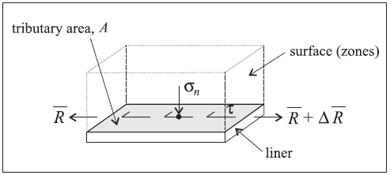
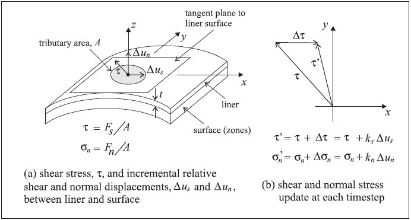
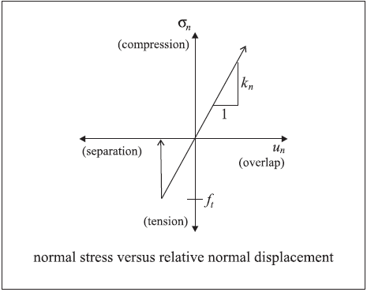
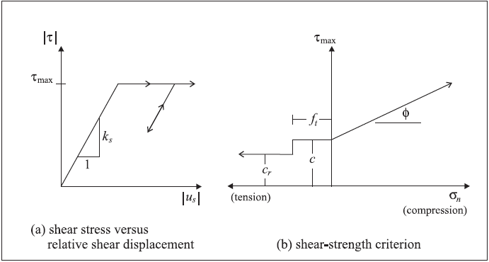

衬砌结构单元
注意壳结构单元基于 壳类结构单元（Shell-Type Structural Element），共享其底层表述与实现。
力学行为
单侧衬砌-网格相互作用
各衬砌单元的力学行为可分为衬砌材料本身的结构响应（见 壳类力学行为（Shell-Type Mechanical Behavior））以及衬砌单元与模型网格的相互作用方式。默认情况下衬砌单元被赋予 DKT-CST 壳单元，它同时承受膜荷载与弯曲荷载（见 壳有限单元（Shell Finite Elements））。实际衬砌可建模为附着于模型网格表面的衬砌单元集合。除提供壳的结构行为外，衬砌与模型网格之间还发生沿剪切方向（衬砌表面切平面内）的摩擦作用。此外在法向上既可承受压力也可承受拉力，且衬砌可能从网格脱开（随后又重新接触）。衬砌用于模拟同时存在法向压/拉作用与剪切摩擦作用的薄衬砌，如喷混凝土衬砌隧洞或挡土墙。
衬砌单元所用全部节点的节点局部系方位在一组循环开始时（或执行 执行计算时步（model cycle） 0 命令时）自动设定，使 \(z\) 轴与使用该节点的所有衬砌单元的平均法向对齐，\(xy\) 轴在衬砌单元切平面内任意取向（见 图 2（Figure 2） (a)）。
衬砌附着于模型网格表面。衬砌-网格单元界面的行为汇总于 图 1（Figure 1） 至 2。作用于衬砌上的应力示于 图 1（Figure 1）。这些应力由法向应力 \(\sigma_n\) 与剪应力 \(\tau\) 组成，由衬砌本身发展的应力平衡（这些应力合力——见 壳中的应力（Stresses in Shells）——在 图 2（Figure 2） 中记为 \(\bar R\)）。界面行为在每个衬砌节点处以法向上具有有限抗拉强度的线性弹簧与衬砌表面切平面内的弹簧-滑块表示。弹簧-滑块的方位随衬砌与宿主介质之间的相对剪切位移 \({\bf u}_s\) 变化，如 图 2（Figure 2） 所示。（注意 图 1（Figure 1） 中衬砌画在网格单元下方，而 图 2（Figure 2） 中画在其上方。）

图 1：作用于某节点周围衬砌单元上的应力


图 2：衬砌节点处界面行为的理想化
衬砌-网格单元界面的法向行为（见 图 3（Figure 3））由法向耦合弹簧的以下性质控制：(1) 单位面积刚度 \(k_n\)；(2) 抗拉强度 \(f_t\)。衬砌-网格单元界面的剪切行为（见 图 4（Figure 4））兼具黏聚与摩擦性质，由剪切耦合弹簧的以下性质以及界面法向应力 \(\sigma_n\) 控制：(1) 单位面积刚度 \(k_s\)；(2) 黏聚强度 \(c\)；(3) 残余黏聚强度 \(c_r\)；(4) 摩擦角 \(\phi\)。若衬砌发生拉伸破坏，则有效黏聚力由 \(c\) 降至 \(c_r\)，抗拉强度设为零。总相对法向位移 \(u_n\) 继续被跟踪，使得间隙闭合时法向压应力再次发展。注意各衬砌单元对应的耦合弹簧性质在衬砌节点处取平均。

图 3：衬砌单元的法向界面行为


图 4：衬砌单元的剪切向界面行为
计算衬砌-网格单元界面相对位移时，采用插值方案依据节点所连网格单元内的位移场计算网格位移。插值方案的权重因子由到各网格点的距离确定。同一插值方案也用于把衬砌-网格单元界面发展的力反向施加到该网格单元的网格点上。
衬砌支持大应变滑动（把 slide 性质设为 开启（on）），此时在大应变模式下运行时，插值位置（衬砌节点用于与网格单元之间传递力与速度——见 结构单元连接（Structural Element Links））将随网格迁移。这可计算衬砌的大应变破坏后行为，此时衬砌节点与网格单元之间发生显著滑动。在每个衬砌节点处，若大应变滑动开启且拉应力超过界面抗拉强度，则把该衬砌节点连接到网格单元面的连接删除；不过若该节点后来又与任何网格单元面接触，连接将（通过带适当衬砌性质的新连接）重建。
嵌入式衬砌行为
衬砌结构单元还可与衬砌两侧的网格单元相互作用。为此在嵌入式衬砌上增加了附加耦合弹簧。（默认衬砌在每个节点只提供一个连接，而嵌入式衬砌在每个节点提供两个连接。）嵌入式衬砌两侧（侧 1 与侧 2）可指定相互独立的性质。嵌入式衬砌的力学行为与上文所述默认衬砌行为相似，只是网格单元-衬砌界面在嵌入式衬砌两侧均起作用。
响应量
衬砌的响应包括衬砌本身的应力，以及法向与剪切耦合弹簧中的应力、位移、屈服状态与加载方向。衬砌的响应可通过 FISH 访问，并
- 用
structure liner list命令打印， - 用
structure liner history命令监测，以及 - 用 Liner 绘图项绘制。
关于支持恢复衬砌本身应力的命令汇总，见 壳类响应量（Shell-Type Response Quantities）。
嵌入式衬砌响应量
嵌入式衬砌的响应量与上文所述默认衬砌响应量相似，只是连接或相关量可关联于侧 2 以及侧 1，也可用 structure liner history 命令指定。
Liner 绘图项可在两侧着不同颜色，以帮助辨识侧 1 与侧 2。
属性
每个衬砌单元除 壳类性质（Shell-Type Properties） 所述所有壳类单元共有的性质外，还有 8 个（嵌入式时为 14 个）性质。这些性质控制衬砌-土体界面的剪切与法向行为。
- coupling-yield-normal，法向耦合弹簧抗拉强度（应力单位），\(f_t\) [F/L2]
- coupling-yield-normal-2，侧 2 上法向耦合弹簧抗拉强度（应力单位），\(f_t\) [F/L2]
- coupling-stiffness-normal，法向耦合弹簧单位面积刚度，\(k_n\) [F/L3]
- coupling-stiffness-normal-2，侧 2 上法向耦合弹簧单位面积刚度，\(k_n\) [F/L3]
- coupling-cohesion-shear，剪切耦合弹簧黏聚力（应力单位），\(c\) [F/L2]
- coupling-cohesion-shear-2，侧 2 上剪切耦合弹簧黏聚力（应力单位），\(c\) [F/L2]
- coupling-cohesion-shear-residual，剪切耦合弹簧残余黏聚力（应力单位），\(c_r\) [F/L2]
- coupling-cohesion-shear-residual-2，侧 2 上剪切耦合弹簧残余黏聚力（应力单位），\(c_r\) [F/L2]
- coupling-friction-shear，剪切耦合弹簧摩擦角，\(\phi\) [度]
- coupling-friction-shear-2，侧 2 上剪切耦合弹簧摩擦角，\(\phi\) [度]
- coupling-stiffness-shear，剪切耦合弹簧单位面积刚度，\(k_s\) [F/L3]
- coupling-stiffness-shear-2，侧 2 上剪切耦合弹簧单位面积刚度，\(k_s\) [F/L3]
- slide，大应变滑动标志（默认：关闭（off））
- slide-tolerance，大应变滑动容差
这些性质可分为强度性质（\(f_t\)、\(c\)、\(c_r\)、\(\phi\)）与刚度性质（\(k_n\)、\(k_s\)）。选择适当的强度性质相对直接，因为它们对应真实物理体系中可量测的宏观强度性质。刚度性质的选择更为复杂，将在下文讨论（更详细的讨论见 界面（Interfaces））。
通常我们希望衬砌-网格单元界面相对周围材料较刚，但能在预期荷载下发生滑动甚至张开。此时只需提供一种使衬砌单元可相对网格单元面滑动和/或张开的手段。强度性质重要，但弹性刚度并不重要。建议采用与较小界面变形相符的最低刚度。一条好的经验规则是：把 \(k_n\) 与 \(k_s\) 设为最刚邻接网格单元等效刚度的十倍。网格单元在垂直于表面方向上的表观刚度（以单位距离应力表示）为
| 其中： | \(K\) and \(G\) | = | 分别为体积模量与剪切模量；以及 |
| \(\Delta z_{\rm min}\) | = | 相邻网格单元沿法向的最小尺寸。 |
max [ ] 记号表示取与衬砌相邻所有网格单元中的最大值（例如衬砌可能邻接多种材料）。注意 (1) 严格只适用于承受法向贯入的平面表面。若表面为曲面（如圆形开挖周边），表观刚度应增大 10 到 100 倍。对具体问题，建议确认界面变形（即耦合弹簧中的位移）相对网格单元变形很小。（耦合弹簧位移可用 列出衬砌单元法向耦合命令（structure liner list coupling-normal） 命令获得；网格单元变形可用 列出单元网格点位移命令（zone gridpoint list displacement） 命令获得。）
Commands & FISH
| 这些内容对您有帮助吗？… | FLAC3D © 2019, Itasca | 原文更新于 2020 年 10 月 8 日 |
| 版权与免责声明 | ||